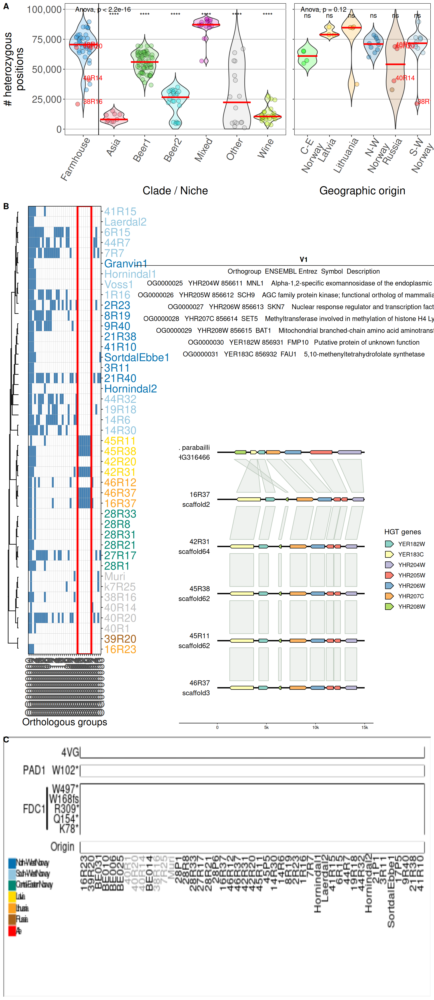

10 Figure 4
10.1 Figure 4 code
10.1.1 Panel A code
# import dataset
kveik_het = read.delim("./data/p02-04/all_plusKV.heterozygous.positions.txt", header = TRUE)
# sort
kveik_het$Pop = factor(kveik_het$Pop,
levels = c("Farmhouse", "Asian", "Beer1", "Beer2", "Bread",
"Mixed", "Mosaic", "Sake", "Wild", "Wine"))
kveik_het$Pop = relevel(kveik_het$Pop, "Farmhouse")
kveik_het$Geographic.origin = ifelse(
kveik_het$Geographic.origin == "Central-E Norway",
"C-E Norway",
kveik_het$Geographic.origin
)
colnames(kveik_het) = c("ID", "Pop", "HET_CT", "Subpopulation", "Geographic.origin")
# mapping swap_yeasts
to_swap = data.frame(
old_name = c("21P1", "17P5", "45P5", "28P1", "28P6"),
new_name = c("21R40", "17R20", "45R38", "28R31", "28R1")
)
# import final clade list
final_clades = read.table(
"./data/p02-04/final_clades_for_pub.txt",
sep = "\t",
header = TRUE,
stringsAsFactors = FALSE
)
# load annotations
tree_annot_raw = read.table("./data/p02-04/genetrees.output.BS.annot-PETER.txt",
sep = "\t",
header = TRUE,
stringsAsFactors = FALSE)
tree_annot_raw = data.frame(tree_annot_raw)
for(k in 1:nrow(to_swap)){
tree_annot_raw$Strain = stringr::str_replace(
tree_annot_raw$Strain,
to_swap[k, "old_name"],
to_swap[k, "new_name"]
)
tree_annot_raw$Name = stringr::str_replace(
tree_annot_raw$Name,
to_swap[k, "old_name"],
to_swap[k, "new_name"]
)
}
# merge with last clade grouping from 20250630
tree_annot = tree_annot_raw %>%
dplyr::left_join(., final_clades, by = "Strain")
tree_annot$Clade = ifelse(tree_annot$niche1 == "farmhouse", "Farmhouse", tree_annot$Clade)
tree_annot$Clade = ifelse(
is.na(tree_annot$Clade) & tree_annot$group == 'beer2',
"Beer2", tree_annot$Clade
)
tree_annot$Clade = ifelse(
is.na(tree_annot$Clade) & tree_annot$group == 'wine',
"Wine", tree_annot$Clade
)
tree_annot$Clade = ifelse(
is.na(tree_annot$Clade) & tree_annot$group == 'asian',
"Asia", tree_annot$Clade
)
tree_annot$Clade = ifelse(is.na(tree_annot$Clade), "Other", tree_annot$Clade)
tree_annot = tree_annot[, -which(colnames(tree_annot) %in% c("niche1", "niche2", "niche3", "group", "seq_name", "Mosaic"))]
colnames(tree_annot) = c("Strain", "ID", "Clade")
tree_annot$ID = stringr::str_replace_all(tree_annot$ID, "x", "X")
# merge
kveik_het = merge(kveik_het, tree_annot, by = "ID")
kveik_het = kveik_het[, which(colnames(kveik_het) %in% c("ID", "HET_CT", "Pop", "Culture", "Subpopulation", "Geographic.origin", "Clade"))]
#------------------------------------------------------------------------------#
## 2.2 - Heterozigous position - all ####
# t-test
tests = kveik_het %>%
dplyr::filter(!(ID %in% c("40R20", "40R1", "40R14", "38R16", "k7R25", "Muri"))) %>%
rstatix::t_test(HET_CT ~ Clade, ref.group = "Farmhouse")
kveik_het$Clade = factor(kveik_het$Clade,
levels = c("Farmhouse", "Asia", "Beer1", "Beer2", "Mixed", "Other", "Wine"))
kveik_het$Clade = relevel(kveik_het$Clade, "Farmhouse")
# plot
p_het = ggplot(kveik_het, aes(x = Clade, y = HET_CT)) +
geom_violin(aes(fill = Clade), alpha = 0.2,
scale = "width",
trim = FALSE) +
geom_point(data = ~dplyr::filter(.x, !(ID %in% c("40R20", "40R1", "40R14", "38R16", "k7R25", "Muri"))),
aes(fill = Clade),
position = position_jitter(width = 0.25),
shape = 21,
alpha = 0.375,
size = 3) +
stat_summary(fun = "median", colour = "red", geom = "crossbar") +
geom_vline(xintercept = 1.5) +
geom_point(data = ~dplyr::filter(.x, ID %in% c("40R20", "40R1", "40R14", "38R16", "k7R25", "Muri")),
aes(fill = "red"),
position = position_jitter(width = 0.25),
shape = 21,
alpha = 0.375,
size = 3) +
geom_text(data = ~dplyr::filter(.x, ID %in% c("40R20", "40R1", "40R14", "38R16", "k7R25", "Muri")),
aes(label = as.character(ID)),
hjust = 0, vjust = 0, color = "red") +
scale_fill_manual(values = c("#2297e6", "#df536b", "#61d04f", "#28e2e5", "#cd0bbc", "grey75", "#bcf60c",
"red")) +
ggpubr::stat_compare_means(method = "anova", label.x = 1.1, label.y = 98000) +
annotate("text", x = 2, y = 95000, label = c(tests$p.adj.signif)[[1]]) +
annotate("text", x = 3, y = 95000, label = c(tests$p.adj.signif)[[2]]) +
annotate("text", x = 4, y = 95000, label = c(tests$p.adj.signif)[[3]]) +
annotate("text", x = 5, y = 95000, label = c(tests$p.adj.signif)[[4]]) +
annotate("text", x = 6, y = 95000, label = c(tests$p.adj.signif)[[5]]) +
annotate("text", x = 7, y = 95000, label = c(tests$p.adj.signif)[[6]]) +
scale_y_continuous(labels = scales::comma,
limits = c(1, 100000)) +
labs(title = "Heterozygosity in yeast populations",
x = "Clade / Niche",
y = "# heterozygous\npositions") +
theme(title = element_blank(),
axis.text.x = element_text(hjust = 0.95, angle = 60, size = 16),
axis.text.y = element_text(size = 16),
axis.title = element_text(size = 18),
legend.position = "none",
panel.background = element_rect(colour = "black", fill = NA),
panel.grid.major.x = element_blank(),
panel.grid.minor.x = element_blank(),
panel.grid.major.y = element_line(colour = "grey75"),
panel.grid.minor.y = element_blank())
#------------------------------------------------------------------------------#
## 2.3 - Heterozigous position - kveiks ####
# t-test
kveik_comp = kveik_het[which(kveik_het$Pop == "Farmhouse" & kveik_het$Subpopulation != "Beer1"), ]
kveik_comp$Subpopulation = "All Farmhouse"
kveik_comp$Geographic.origin = "All Farmhouse"
#kveik_comp$Culture = "All Farmhouse"
kveik_comp = rbind(kveik_comp, kveik_het[which(kveik_het$Pop == "Farmhouse" & kveik_het$Subpopulation != "Beer1"), ])
tests_geo = kveik_comp %>%
dplyr::filter(!(ID %in% c("40R20", "40R1", "40R14", "38R16", "k7R25", "Muri", "39R20"))) %>%
rstatix::t_test(HET_CT ~ Geographic.origin, ref.group = "All Farmhouse")
tests_geo[6, ] = list("HET_CT", "All Farmhouse", "Russia", 37, 1, 0, 0, 1, 1, "ns")
# plot
kveik_comp = kveik_het[which(kveik_het$Pop == "Farmhouse" & kveik_het$Subpopulation != "Beer1"), ]
p_het2 = ggplot(kveik_comp, aes(x = Geographic.origin, y = HET_CT)) +
geom_violin(aes(fill = Geographic.origin), alpha = 0.2,
scale = "width",
trim = FALSE) +
geom_point(data = ~dplyr::filter(.x, !(ID %in% c("40R20", "40R1", "40R14", "38R16", "k7R25", "Muri"))),
aes(fill = Geographic.origin),
position = position_jitter(width = 0.25),
shape = 21,
alpha = 0.375,
size = 3) +
geom_point(data = ~dplyr::filter(.x, ID %in% c("40R20", "40R1", "40R14", "38R16", "k7R25", "Muri")),
aes(fill = "red"),
position = position_jitter(width = 0.25),
shape = 21,
alpha = 0.375,
size = 3) +
stat_summary(fun = "median", colour = "red", geom = "crossbar") +
geom_text(data = ~dplyr::filter(.x, ID %in% c("40R20", "40R1", "40R14", "38R16", "k7R25", "Muri")),
aes(label = as.character(ID)),
hjust = 0, vjust = 0, color = "red") +
scale_fill_manual(values = c("green", "#FFDA00", "orange", "#0571B0", "red", "#A6611A", "#92C5DE")) +
scale_x_discrete(labels = scales::label_wrap(10)) +
scale_y_continuous(labels = scales::comma,
limits = c(1, 100000)) +
ggpubr::stat_compare_means(method = "anova", label.x = 1.1, label.y = 98000) +
annotate("text", x = 1, y = 95000, label = c(tests_geo$p.adj.signif)[[1]]) +
annotate("text", x = 2, y = 95000, label = c(tests_geo$p.adj.signif)[[2]]) +
annotate("text", x = 3, y = 95000, label = c(tests_geo$p.adj.signif)[[3]]) +
annotate("text", x = 4, y = 95000, label = c(tests_geo$p.adj.signif)[[4]]) +
annotate("text", x = 5, y = 95000, label = c(tests_geo$p.adj.signif)[[5]]) +
annotate("text", x = 6, y = 95000, label = c(tests_geo$p.adj.signif)[[6]]) +
labs(x = "Geographic origin") +
theme(title = element_blank(),
axis.text.x = element_text(hjust = 0.95, angle = 60, size = 16),
axis.text.y = element_blank(),
axis.title.x = element_text(size = 18),
axis.title.y = element_blank(),
legend.position = "none",
panel.background = element_rect(colour = "black", fill = NA),
panel.grid.major.x = element_blank(),
panel.grid.minor.x = element_blank(),
panel.grid.major.y = element_line(colour = "grey75"),
panel.grid.minor.y = element_blank())10.1.2 Panel B code
# load the tree file to make dendrogram
tree = read.tree("./data/p02-04/genetrees.output.BS.best.2025.tre")
# Define the specific samples to keep
selected_samples = c(
"1R16", "2R23", "3R11", "6R15", "k7R25", "7R7", "8R19", "9R40", "14R30", "14R6",
"16R23", "16R37", "17P5", "19R18", "21P1", "21R38", "27R17", "28P1", "28P6", "28R21",
"28R33", "28R8", "38R16", "39R20", "40R1", "40R14", "40R20", "41R10", "41R15", "42R20",
"42R31", "44R32", "44R7", "45P5", "45R11", "46R12", "46R37", "Hornindal1", "Hornindal2",
"Laerdal2", "Muri" , "SortdalEbbe1", "Voss1", "Granvin1", "Skud"
)
# Prune the tree to keep only the selected samples
pruned_tree = keep.tip(tree, selected_samples)
# Reroot the pruned tree with "Skud" as outgroup
pruned_tree = root(pruned_tree, outgroup = "Skud", resolve.root = FALSE)
# Prune the pruned tree to remove Skud
pruned_tree = drop.tip(pruned_tree, "Skud")
# dendrogram plot
p_tree = # Plot the pruned tree
ggtree(pruned_tree) +
theme(plot.margin = margin(10, 10, 10, 10)) +
xlim(0, 15)
# extract tip order
tip_order = p_tree$data %>%
filter(isTip) %>% # Select only tip labels
arrange(y) %>% # Arrange by y-axis position
pull(label)
# import table
heatfile = read.delim("./data/p02-04/Vikings.Asco.HGT.heatmap.tab", header = FALSE)
heatfile$V2 = stringr::str_replace_all(heatfile$V2, "x", "X")
heatfile = heatfile[which(heatfile$V2 %in% c(
"Voss1", "SortdalEbbe1", "Muri", "Laerdal2", "k7R25", "Hornindal2", "Hornindal1",
"Granvin1", "9R40", "8R19", "7R7", "6R15", "46R37", "46R12", "45R11", "45P5", "44R7", "44R32",
"42R31", "42R20", "41R15", "41R10", "40R20", "40R1", "40R14", "3R11", "39R20", "38R16", "2R23",
"28R8", "28R33", "28R21", "28P6", "28P1", "27R17", "21R38", "21P1", "1R16", "19R18", "17P5",
"16R37", "16R23", "14R6", "14R30")
), ]
for(k in 1:nrow(to_swap)){
heatfile$V2 = stringr::str_replace_all(
heatfile$V2,
to_swap[k, "old_name"],
to_swap[k, "new_name"]
)
tip_order = stringr::str_replace_all(
tip_order,
to_swap[k, "old_name"],
to_swap[k, "new_name"]
)
}
# relevel
heatfile$V2 = factor(heatfile$V2, levels = tip_order)
# drop OG for plotting purposes
heatfile = heatfile %>%
dplyr::filter(!(V1 %in% c(
"OG0000037", "OG0000038", "OG0000039", "OG0000040", "OG0000041", "OG0000042",
"OG0000043", "OG0000044", "OG0000045", "OG0000046", "OG0000047", "OG0000048"
)))
# set color labels
col_label = rev(
c("#0571B0", rep("#92C5DE", 5), "#0571B0", rep("#92C5DE", 3),
rep("#0571B0", 9), rep("#92C5DE", 4), rep("#FFDA00", 4),
rep("#FBA01D", 3), rep("#008470", 6), rep("grey75", 6),
"#A6611A", "#FBA01D")
)
# prepare heatmap
p_HGT = ggplot(heatfile) +
geom_tile(aes(x = V1, y = V2, fill = V3), color = "grey75") +
scale_fill_gradientn(na.value = "white", limits = c(0, 2),
colours = c("white", "steelblue", "steelblue"),
breaks = c(0, 1, 2)) +
coord_cartesian(expand = FALSE) +
scale_y_discrete(position = "right") +
labs(fill = "Gene presence",
y = "Strain",
x = "Orthologous groups") +
theme(axis.title.x = element_text(size = 16),
axis.title.y = element_blank(),
axis.text.x = element_text(size = 18, angle = 90, hjust = 0.95, vjust = 0.5),
axis.text.y = element_text(size = 18, colour = col_label),
legend.position = "none",
panel.border = element_rect(colour = "black", fill = NA, size = 0.75)) +
annotate(xmin = 25.5, xmax = 32.5,
ymin = -Inf, ymax = Inf,
geom = "rect", alpha = 0,
colour = "red", linewidth = 1.5)10.1.3 Panel C code
# read best hits table
matrix.d = read.delim("data/p02-04/Vikings.Asco.HGT.besthits.tab", header = FALSE, sep = "\t")
p_HGT2 = ggpubr::ggtexttable(matrix.d, rows = NULL, theme = ggpubr::ttheme("blank")) %>%
ggpubr::tab_add_hline(at.row = 1:2, row.side = "top", linewidth = 2)
# genome seq
yeast_seqs = utils::read.delim("data/p02-04/Vikings.Asco.HCT.seqs.txt", header = TRUE, stringsAsFactors = FALSE) %>%
dplyr::mutate(seq_id = stringr::str_replace_all(seq_id, "\\\\n", "\n"))
yeast_genes = utils::read.delim("data/p02-04/Vikings.Asco.HCT.genes.txt", header = TRUE, stringsAsFactors = FALSE) %>%
dplyr::mutate(seq_id = stringr::str_replace_all(seq_id, "\\\\n", "\n"))
yeast_ava = utils::read.delim("data/p02-04/Vikings.Asco.HCT.ava.txt", header = TRUE, stringsAsFactors = FALSE) %>%
dplyr::mutate(seq_id = stringr::str_replace_all(seq_id, "\\\\n", "\n")) %>%
dplyr::mutate(seq_id2 = stringr::str_replace_all(seq_id2, "\\\\n", "\n"))
p_HGT3 = gggenomes::gggenomes(seqs = yeast_seqs, genes = yeast_genes, links = yeast_ava) +
geom_seq(size = 1) +
geom_bin_label(size = 4) +
geom_gene(aes(fill = name)) +
scale_fill_brewer("HGT genes", palette = "Set3") +
geom_link(alpha = 0.25, show.legend = FALSE)10.1.4 Panel D code
library(ape)
library(ggtree)
library(ggplot2)
library(patchwork)
library(dplyr)
# load the tree file to make dendrogram
tree <- read.tree("genetrees.output.BS.best.tre")
# Define the specific samples to keep
selected_samples <- c("1R16"
,"2R23"
,"3R11"
,"6R15"
,"k7R25"
,"7R7"
,"8R19"
,"9R40"
,"14R30"
,"14R6"
,"16R23"
,"16R37"
,"17P5"
,"19R18"
,"21P1"
,"21R38"
,"27R17"
,"28P1"
,"28P6"
,"28R21"
,"28R33"
,"28R8"
,"38R16"
,"39R20"
,"40R1"
,"40R14"
,"40R20"
,"41R10"
,"41R15"
,"42R20"
,"42R31"
,"44R32"
,"44R7"
,"45P5"
,"45R11"
,"46R12"
,"46R37"
,"Hornindal1"
,"Hornindal2"
,"Laerdal2"
,"Muri"
,"SortdalEbbe1",
"Skud",
"x1111",
"x1011",
"x1030",
"x1129",
"x1046"
)
#where are voss1 and granvin1?
# Prune the tree to keep only the selected samples
pruned_tree <- keep.tip(tree, selected_samples)
# Reroot the pruned tree with "Skud" as outgroup
pruned_tree <- root(pruned_tree, outgroup = "Skud", resolve.root = FALSE)
# Prune the pruned tree to remove Skud
pruned_tree <- drop.tip(pruned_tree, "Skud")
# dendrogram plot
p0 <- # Plot the pruned tree
ggtree(pruned_tree) +
theme(plot.margin = margin(10, 10, 10, 10)) +
xlim(0, 15)+
coord_flip()
# extract tip order
tip_order <- p0$data %>%
filter(isTip) %>% # Select only tip labels
arrange(y) %>% # Arrange by y-axis position
pull(label)
# load genotype data
POFdata <- read.csv('Mutations summary for R FARMHOUSE 3.csv')
# add levels to V2 to match dendrogram
POFdata$V2 = factor(POFdata$V2, levels = tip_order)
# where are granvin 1 and voss 1 supposed to be in the tree???
# Remove all rows with any NA in the dataframe, including in V2
POFdata <- na.omit(POFdata)
# add facor levels to genes/phenotype
POFdata$V4 = factor(POFdata$V4,
levels = c("Phenotype", "FDC","PAD"))
POFcolors <- c('0' = "grey", '1' = "yellow", '2' = "red")
####################################################################################################
# Plotting
####################################################################################################
p1 <- ggplot(POFdata[POFdata$V4 == 'Phenotype',]) +
geom_tile(aes(x = V2, y = V1, fill = factor(V3)), color = "white", lwd = 0.5) +
scale_y_discrete(labels = c('4VG'), expand = c(0,0))+
scale_x_discrete(expand = c(0,0))+
scale_fill_manual(values = POFcolors)+
theme(plot.title = element_text(size = 24, hjust = 0.5),
axis.ticks.x = element_blank(),
axis.ticks.y = element_blank(),
axis.ticks.length.y = unit(1, "lines"),
axis.text.x = element_blank(),
legend.position = "none",
panel.background = element_blank(),
panel.border = element_rect(colour = "black", fill = NA),
axis.title = element_blank(),
plot.margin = margin(0.1,0.1,0.1,0.1, 'mm'))+
coord_fixed()
p2 <- ggplot(POFdata[POFdata$V4 == 'PAD',]) +
geom_tile(aes(x = V2, y = V1, fill = factor(V3)), color = "white", lwd = 0.5) +
scale_y_discrete(labels = c('W102*'), expand = c(0,0))+
scale_x_discrete(expand = c(0,0))+
scale_fill_manual(values = POFcolors)+
theme(plot.title = element_text(size = 24, hjust = 0.5),
axis.ticks.x = element_blank(),
axis.ticks.y = element_blank(),
axis.ticks.length.y = unit(1, "lines"),
axis.text.x = element_blank(),
legend.position = "none",
panel.background = element_blank(),
panel.border = element_rect(colour = "black", fill = NA),
axis.title = element_blank(),
plot.margin = margin(0.1,0.1,0.1,0.1, 'mm'))+
coord_fixed()
p3 <- ggplot(POFdata[POFdata$V4 == 'FDC',]) +
geom_tile(aes(x = V2, y = V1, fill = factor(V3)), color = "white", lwd = 0.5) +
scale_y_discrete(labels = c("K78*", "Q154*", "R309*", "W168fs", "W497*"), expand = c(0,0))+
scale_x_discrete(expand = c(0,0))+
scale_fill_manual(values = POFcolors)+
theme(plot.title = element_text(size = 24, hjust = 0.5),
axis.ticks.x = element_blank(),
axis.ticks.y = element_blank(),
axis.ticks.length.y = unit(1, "lines"),
axis.text.x = element_blank(),
axis.text.y = element_text(hjust = 1),
legend.position = "none",
panel.background = element_blank(),
panel.border = element_rect(colour = "black", fill = NA),
axis.title = element_blank(),
plot.margin = margin(0.1,0.1,0.1,0.1, 'mm'))+
coord_fixed()
# Define custom colors for the regions
RegionColors <- c(
'North-West Norway' = '#0571B0',
'South-West Norway' = '#92C5DE',
'Central-Eastern Norway' = '#018571',
'South-Eastern Norway' = '#80CDC1',
'Latvia' = '#FFDA00',
'Lithuania' = '#FBA01D',
'Russia' = '#A6611A',
'beer1' = '#FF0000',
'beer2' = 'limegreen'
)
p4 <- ggplot(POFdata[POFdata$V4 == 'Phenotype',]) +
geom_tile(aes(x = V2, y = V1, fill = factor(V5)), color = "white", lwd = 0.5) +
scale_y_discrete(labels = c('Region'), expand = c(0, 0)) +
scale_x_discrete(expand = c(0, 0)) +
scale_fill_manual(values = RegionColors) +
theme(plot.title = element_text(size = 24, hjust = 0.5),
axis.ticks.x = element_blank(),
axis.ticks.y = element_blank(),
axis.ticks.length.y = unit(1, "lines"),
axis.text.x = element_text(angle = 90, hjust = 1, vjust = 0.5),
axis.text.y = element_text(hjust = 1),
legend.position = "none",
panel.background = element_blank(),
panel.border = element_rect(colour = "black", fill = NA),
axis.title = element_blank(),
plot.margin = margin(0.1,0.1,0.1,0.1, 'mm'))+
coord_fixed()
combined_plot <- p1 + p2 +p3 + p4 + p0 +
plot_layout(ncol = 1, widths = c(1))
plot(combined_plot)
ggsave("POF plot 4.pdf", plot = combined_plot, height = 5, width = 6)10.1.5 Merge
my_plot1 = ggpubr::ggarrange(
p_het, p_het2,
ncol = 2, nrow = 1,
align = "h",
widths = c(1, 0.5)
)
my_plot2 = ggpubr::ggarrange(
ggpubr::ggarrange(
p_tree, p_HGT,
align = "h", nrow = 1,
widths = c(0.15, 0.9)
), ggpubr::ggarrange(
p_HGT2, p_HGT3,
ncol = 1, nrow = 2,
heights = c(0.4, 0.6)),
ncol = 2, nrow = 1,
widths = c(0.8, 1.2)
)
final_plot = cowplot::plot_grid(
my_plot1, my_plot2, panel_d,
nrow = 3,
rel_heights = c(0.75, 2, 1),
labels = "AUTO"
)10.2 Figure 4 plot

10.3 Session Information
Note
R version 4.3.2 (2023-10-31)
Platform: x86_64-conda-linux-gnu (64-bit)
Running under: openSUSE Tumbleweed
Matrix products: default
BLAS/LAPACK: /home/andrea/miniforge3/envs/moai/lib/libmkl_rt.so.2; LAPACK version 3.9.0
locale:
[1] LC_CTYPE=en_US.UTF-8 LC_NUMERIC=C
[3] LC_TIME=it_IT.UTF-8 LC_COLLATE=en_US.UTF-8
[5] LC_MONETARY=en_US.UTF-8 LC_MESSAGES=en_US.UTF-8
[7] LC_PAPER=en_US.UTF-8 LC_NAME=C
[9] LC_ADDRESS=C LC_TELEPHONE=C
[11] LC_MEASUREMENT=en_US.UTF-8 LC_IDENTIFICATION=C
time zone: Europe/Brussels
tzcode source: system (glibc)
attached base packages:
[1] grid stats graphics grDevices utils datasets methods
[8] base
other attached packages:
[1] treeio_1.26.0 stringr_1.5.1 rstatix_0.7.2
[4] reshape_0.8.9 RColorBrewer_1.1-3 plyr_1.8.9
[7] naturalsort_0.1.3 ggtreeExtra_1.12.0 ggtree_3.10.1
[10] gggenomes_1.0.1 ggh4x_0.3.0 ggplot2_3.5.1
[13] ggnewscale_0.5.0 gridExtra_2.3 dplyr_1.1.4
[16] BiocManager_1.30.25 aplot_0.2.4 ape_5.8-1
loaded via a namespace (and not attached):
[1] gtable_0.3.6 xfun_0.50 htmlwidgets_1.6.4 lattice_0.22-6
[5] tzdb_0.4.0 vctrs_0.6.5 tools_4.3.2 generics_0.1.3
[9] yulab.utils_0.2.0 parallel_4.3.2 tibble_3.2.1 pkgconfig_2.0.3
[13] ggplotify_0.1.2 lifecycle_1.0.4 compiler_4.3.2 farver_2.1.2
[17] munsell_0.5.1 carData_3.0-5 ggfun_0.1.8 htmltools_0.5.8.1
[21] yaml_2.3.10 lazyeval_0.2.2 Formula_1.2-5 ggpubr_0.6.0
[25] pillar_1.10.1 car_3.1-3 tidyr_1.3.1 ellipsis_0.3.2
[29] magick_2.8.5 abind_1.4-8 nlme_3.1-167 tidyselect_1.2.1
[33] digest_0.6.37 stringi_1.8.4 purrr_1.0.2 labeling_0.4.3
[37] cowplot_1.1.3 fastmap_1.2.0 colorspace_2.1-1 cli_3.6.3
[41] magrittr_2.0.3 patchwork_1.3.0 broom_1.0.7 readr_2.1.5
[45] withr_3.0.2 scales_1.3.0 backports_1.5.0 rmarkdown_2.29
[49] ggsignif_0.6.4 hms_1.1.3 evaluate_1.0.3 knitr_1.49
[53] gridGraphics_0.5-1 rlang_1.1.5 Rcpp_1.0.14 glue_1.8.0
[57] tidytree_0.4.6 jsonlite_1.8.9 R6_2.5.1 fs_1.6.5